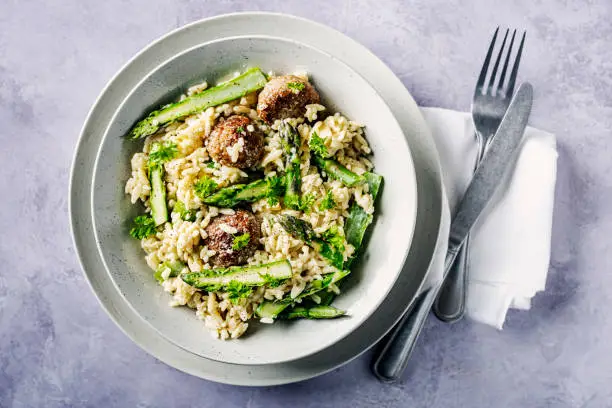
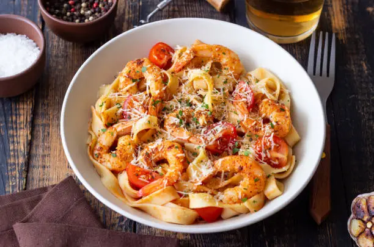

30% Off This Weekend
Enjoy a delightful Mediterranean feast at Little Lemon with an exclusive 30% discount this weekend! Treat yourself to our delicious Italian, Greek, and Turkish-inspired dishes, crafted with fresh ingredients and traditional recipes. Don't miss out—visit us and savor the flavors of the Mediterranean!
our New Menu

Nestled in the heart of Chicago, Little Lemon offers a cozy Mediterranean escape with dishes inspired by Italian, Greek, and Turkish traditions. Our focus on fresh, seasonal ingredients ensures that every meal is bursting with flavor.
Book a table

Nestled in the heart of Chicago, Little Lemon offers a cozy Mediterranean escape with dishes inspired by Italian, Greek, and Turkish traditions. Our focus on fresh, seasonal ingredients ensures that every meal is bursting with flavor.
Opening Hours

Nestled in the heart of Chicago, Little Lemon offers a cozy Mediterranean escape with dishes inspired by Italian, Greek, and Turkish traditions. Our focus on fresh, seasonal ingredients ensures that every meal is bursting with flavor.